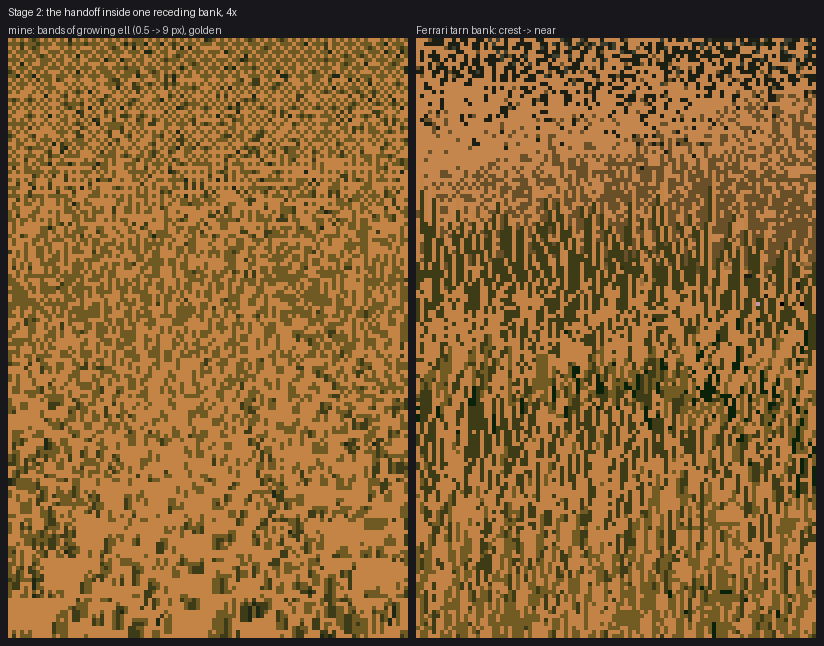

Design the curve, then measure it: coverage and tone
Part 4 of the grass-lod tutorials. Code: code/grasslod/calibrate.py (coverage_ratio, _measure, correction), code/grasslod/marks.py (target_coverage, keep_for).
Two quantities decide how a zoom feels at squinting distance: how much of the ground is covered by marks, and what mean tone the marks and base make together. Both change as the mark vocabulary changes, and both have to change only in the way you designed. I tried to predict both from formulas, four times, and was wrong every time. What worked was: write down the curve you want as a smooth function of stroke size, measure once what the painter actually does on a flat patch, and invert the measurement every frame.
Coverage
The design
Ferrari's tarn bank, read from crest to foot, tells you the coverage curve. At the crest the marks are sparse holes on a flat base. Below that is a dense band of short ticks, which reads as a darker belt. Near, strands cover about half the ground and let the base show between them. As a smooth function of stroke length ell:
def target_coverage(mp, ell):
ell = np.asarray(ell, float)
return (mp["cov_far"] + (mp["cov_mid"] - mp["cov_far"]) * np.clip((ell - 0.4) / 1.2, 0, 1)
+ (mp["cov_near"] - mp["cov_mid"]) * np.clip((ell - 3.0) / 3.0, 0, 1))
# cov_far=0.08, cov_mid=0.62 (ticks, ell ~1.6-3), cov_near=0.58 (strands, ell >= 6)
It's piecewise linear, but continuous, with no step. (The slope changes at the joints, which is fine: a kink in a smooth control parameter doesn't show; a jump does.)
Why you can't compute how many marks that takes
The naive estimate: coverage = tufts per pixel × pixels per tuft. I guessed pixels per tuft with glyph_area(ell) (blades × length × width). My first painted frame was predicted at 55% coverage and measured at 22%. Blades of one tuft overlap each other, short blades round to zero, and marks overlap marks.
So I measured, with a linear correction: measured coverage / nominal coverage per stroke length, store the ratio, divide it out. Better, but near strands still came out at 45% against a 58% target:
ell measured target
14 0.454 0.58
9 0.423 0.58
6 0.405 0.58
4 0.383 0.50
2 0.393 0.42
0.5 0.214 0.213
The correction was wrong in kind, not in size. Marks placed independently overlap more as there are more of them: coverage saturates. If a fraction keep of tufts is drawn, coverage is 1 - exp(-a · keep) for some rate a that depends on the stroke length.
The measurement and its inversion
coverage_ratio paints a flat patch at each of 16 stroke lengths with a nominal keep, measures the covered fraction, and stores the rate:
meas = (~np.isnan(canvas[10:-4, 8:-8])).mean()
# overlapping marks saturate: coverage = 1 - exp(-a * keep). Store the
# rate a, so keep_for can invert it exactly for any target.
r[ie] = -np.log(max(1e-4, 1 - min(meas, 0.995))) / max(keep, 1e-9)
Every frame inverts it (interpolating the rate in log-log between the calibrated lengths, and scaling it by the tuft density on screen, so other camera angles work too):
a = coverage_ratio(world, mp, ell) # measured rate at the calibration camera
rho_cal = rho * max(s, 0.05) / 0.5 # the rate scales with tuft density on screen
a = a * rho / rho_cal
return float(min(1.0, -np.log(1 - min(tgt, 0.99)) / max(a, 1e-9)))
After this, painted coverage matched the target at every length: 0.583 against 0.58 at ell 14, 0.153 against 0.157 at ell 0.2.
The table is cached per species, grazing, wind and mark-parameter set (calibrate._key), and computed on first use in about a minute.
For any material: if your marks are placed independently, their coverage saturates. Calibrate the rate, not a ratio.
Tone
The problem
Each mark vocabulary has its own mean offset from the value it's meant to express. Near strands carry dark gaps, which pull a lit patch down by more than half a step. Far dots on lit ground are dark holes, which pull it down a little. At the top of the ramp nothing can push up. With no correction, my first ladder's mean grass luminance went 87, 135, 158, 157 from 30 to 0.6 px/m: the far end was almost twice as bright as the near.
The measurement
_measure paints flat patches (the world's height function replaced by zero) at 16 stroke lengths × 4 design values per light family, with the same base quantizer the real frame uses, and records the mean painted step minus the design value:
est = np.where(mk, np.clip(np.floor(np.nan_to_num(c) + 0.5), 0, 6), R.qbase[inner])
out[litfam][ie, iv] = est.mean() - v
offset(world, mp, ell, V, lit) interpolates the table (in log ell, linear in V), and the painter corrects the design value before painting:
Vd = V - mp["lock"] * correction(world, mp, ell, V, lit, mp["ell_ref"])
# correction = offset(ell) - offset(ell_ref)
Which tone to lock to: a mistake worth knowing about
My first lock was full strength (lock=1) toward the near look (ell_ref=8): every zoom should look as bright as the near strands in squint. It measured beautifully flat across the ladder (spread about 0.3 steps). And it broke the far end. The near look is darker than a flat lit base, so to reach it far off, the base itself had to dither halfway between two steps. The flat ochre crest of the bank became a two-tone checker, and the whole receding bank became one uniform texture:

With the full lock toward the near tone: the bank (left) is one texture from crest to foot. Ferrari's (right) changes character three times.
The fix was to decide what the design value means. Now V is the far look: a flat base with sparse holes (ell_ref=0.3). The lock compensates only half of the near strands' extra darkening (lock=0.5). So the bank darkens by about half a step toward the viewer, which Ferrari's does too (near grass shows its gaps), and it does so smoothly:

With the lock at half strength toward the far look: the crest is flat ochre and holes again.
tone V=4.8: mean step by ell [4.21 4.46 4.54 4.5 4.7 4.87 4.93] (ell 14 ... 0.12)
The general lesson: a tone lock makes the squinted image constant; it doesn't tell you what the constant should be. Choose the reference from the distance whose look you most need to keep pure. For grass that was the far base, because it's a flat plane and any dither in it reads as noise.
(Honesty: the module docstring in calibrate.py still describes the original near-referenced, full-strength lock. The code and MarkParams hold the final one.)
The recipe, for any material
- Write the target curve (coverage, and whatever else must be continuous) as a smooth function of mark size, from what the reference does at each distance.
- Build a flat-patch harness that runs the real painter (same marks, same base quantizer) at a ladder of sizes.
- Measure the quantity per size, in the form the physics suggests (a saturation rate for coverage, an offset for tone).
- Invert it every frame by interpolation. Cache the tables by every parameter that changes the marks.
- Re-measure after any change to the mark rules. My tables are keyed by a hash of all mark parameters, so a change invalidates them automatically.